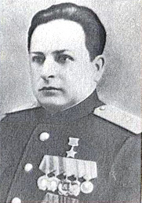

Николай Филиппович Королёв

Николай Филиппович Королёв (01 июля 1906, д. Аминовичи, Могилёвская губерния, Российская империя — 07 апреля 1972, Могилёв, СССР) — советский военный и партийный деятель, генерал-майор (1943), Герой Советского Союза (1970). Один из организаторов и руководителей партизанского подполья и партизанского движения в Могилевской области в годы Великой Отечественной войны. С 1930 работал в Осиповичском леспромхозе, на лесопильном заводе. С 1932 председатель колхоза, сельсовета. С 1937 зам. председателя, председатель Осиповичского райисполкома. С июля 1941 в партизанах, командир группы. С марта 1942 командир 210-го отряда им. И. В. Сталина, с января 1943 командир 1-й Осиповичской партизанской бригады (с июля 1943 Осиповичская военно-оперативная группа). В апреле-сентябре 1943 член Могилевского подпольного обкома КП(б)Б, участвовал во многих боевых операциях. Постановлением Совета Народных Комиссаров СССР от 16 сентября 1943 года № 1000 — одному из десяти командиров партизанских формирований Белорусской ССР — Н. Ф. Королёву присвоено воинское звание «генерал-майор». Указом Президиума Верховного Совета СССР от 1 января 1944 года за образцовое выполнение боевых заданий в тылу врага и особые заслуги в развитии партизанского движения в Белоруссии генерал-майору Королёву Николаю Филипповичу было присвоено звание Героя Советского Союза. С августа 1944 председатель Могилевского горисполкома. С 1946 года в запасе. В 1953—1957 секретарь Хотимского райкома КПБ, с 1958 на советской работе в Могилёве. Окончил Высшую партийную школу при ЦК КПСС (1956). Кандидат в члены ЦК КПБ в 1940—1952, 1954—1960. Депутат Верховного Совета БССР в 1947—1959. Член Президиума Верховного Совета БССР в 1947—1955.
На главную